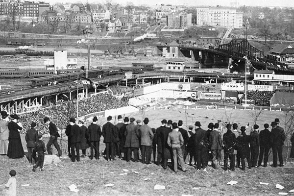
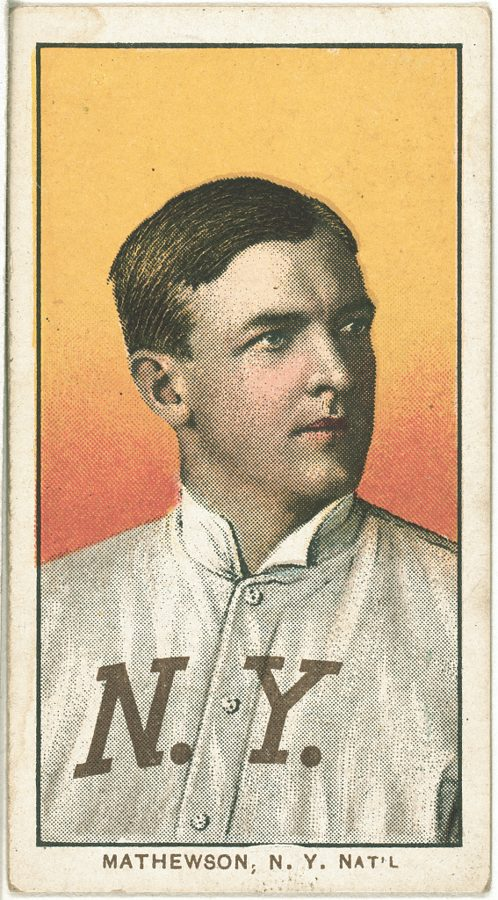
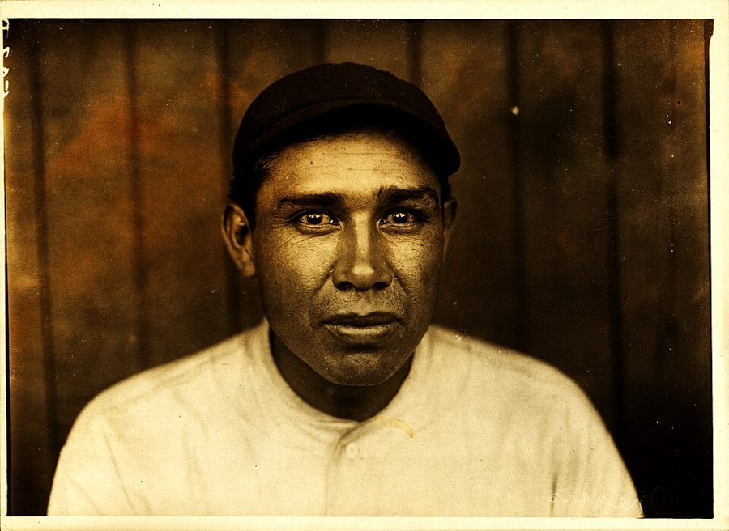
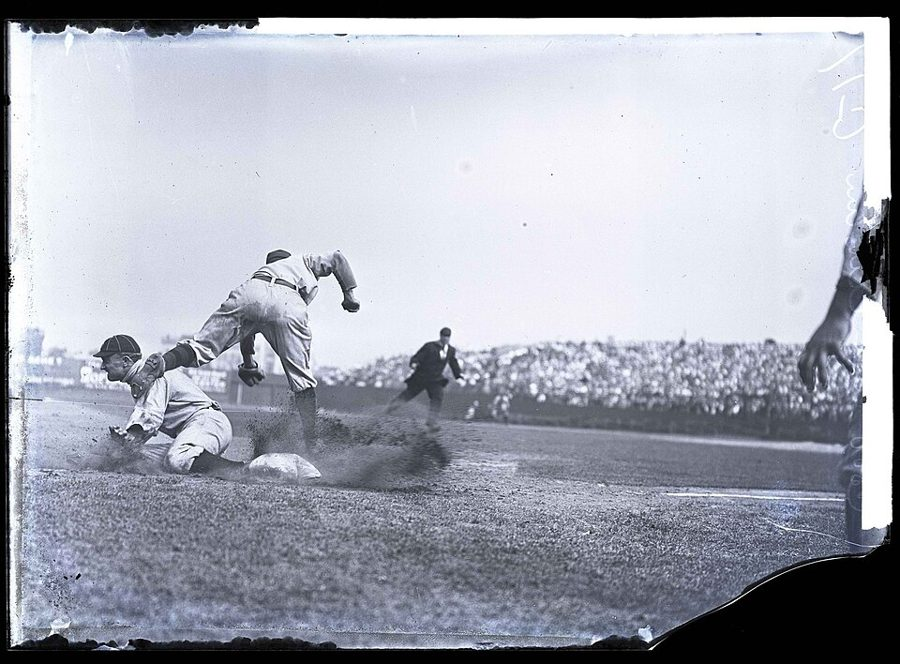
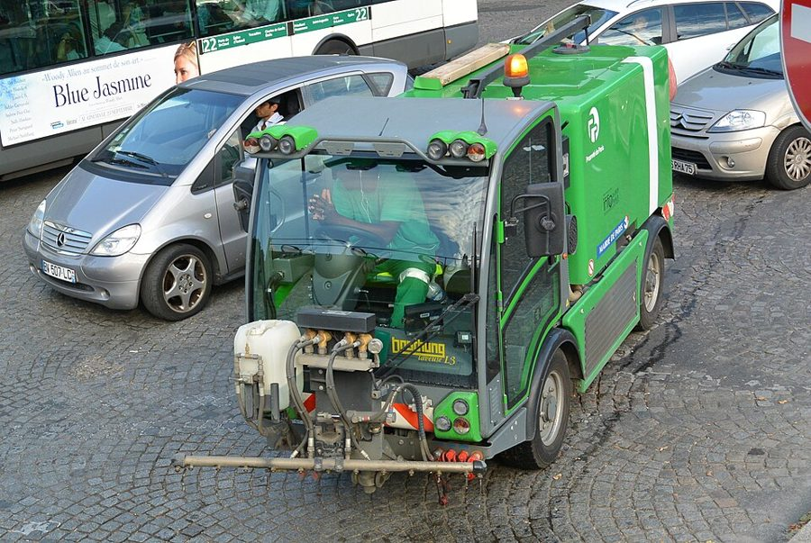

这一篇在做什么
1997 年，Luke 刚满三岁，在卢森堡公园踢球的样子已经像个欧洲孩子。作者有点慌，在睡前给他编了个棒球故事：1908 年，一个三岁的投手进了纽约巨人队，对手是凶狠的 Ty Cobb。故事成了每晚的保留节目，一讲两年。全篇一边讲这个故事怎么长大、怎么收不了尾，一边从「儿子没见过棒球却爱听」想到词和东西的关系，再想到一个久居巴黎的美国人到底想念什么。读的时候留意这两条线在哪里接上。

库根崖（Coogan’s Bluff）上的观众俯看 Polo Grounds 球场。原图说明写的是 1908 年巨人队对小熊队的一场比赛。§3 作者在 Luke 床头挂的是一张 1908 年在同一处拍的照片，书里说那张没有女人；这张左边站着女人，不是同一张。作者不详，公有领域，维基共享资源 读之前：这篇的来历
这一篇写在 1999 年春天：文中说一家人已在巴黎住了四年，故事讲了两年，篇末又提到炸弹开始落在塞尔维亚（北约 1999 年 3 月下旬开始轰炸南斯拉夫）。它是第三部分「从物件学到的」的最后一篇，前一篇是第三本圣诞日记，后一篇进入第四部分，写 1998 年在法国办的世界杯。这一篇几乎不碰法国的公共生活，是一篇关于父子、讲故事和想家的随笔。要记住作者的底子：他少年时住在蒙特利尔（第 1 篇提过），是棒球迷；Luke 生在纽约，却只记得巴黎。篇末那句半开玩笑的「也该带他回家了」，值得留意。
一个孩子从没见过的东西，为什么能让他听得入迷？一个大人在巴黎住了四年，想念纽约的到底是什么？
读的时候带着这几个问题。不用先找答案，读完回来对照「检查一下理解」。
作者为什么偏偏给儿子讲一个棒球故事？他在怕什么？§1
Luke 从没见过棒球。作者说这让他对讲故事的哪条老规矩起了疑？§3
作者想念纽约的那些东西，和「照理该想念的」有什么不一样？§4
作者想给故事一个怎样的结局？Luke 不接受时，他为什么那么慌？§6
这一篇的路线
这一篇有三层：1908 年纽约球场上的故事，巴黎卧室和街上的现实，作者自己在想的事。§1、§2 故事和卧室交替，窗外的垃圾车、隔壁的催睡声不时打断比赛。§3 故事退到后面，作者开始问：儿子没见过棒球，这些词在他脑子里是什么。读译本最容易在 §4 觉得跳了：忽然讲起久居国外的美国人想念什么。接上的那根线是「词，不是东西」：Luke 要的是故事里的词，作者想念的是体育版上的词。§5、§6 回到故事，讲它怎么收尾、怎么被孩子接了过去。
1908 故事里
巴黎家里
作者在想
§1
§2*
§3*
§4*
§5*
§6*
公园里的足球
三岁投手进城
窗外的垃圾车
奶瓶球对 Cobb
翻身就睡
床头的老照片
这些词指什么
想念体育版
鱼贩追上来
难以隐身
录像里的男孩
打掉 Cobb 的头
「他没有回家」
塞尔维亚的炸弹
本站示意图。橙点是作者讲的 1908 年的故事，蓝点是巴黎家里和街上，绿点是作者自己的思索；折线是阅读顺序，横虚线是本站分的节。 作者落在哪： 作者说他现在相信，故事的力量不在细节可信，而在词能不能一路飞到情感那里。他想家，想的也是一套词，和在纽约人群里隐身的自在。他想给故事一个有教训的结局，没成，故事归了孩子；篇末他说，大概也该带儿子回家了。
分节地图
原书这一篇没有分隔，本站按内容分成六节（带 * 的节号是本站分的）。每一节的粗体是读译本时认得出的场面；下面的斜体是英文这一节开头的几个词，打开电子书搜它就能跳到那里。读完一节打个勾。
公园里顶球的 Luke，三岁投手坐火车进纽约约 800 词 I don’t really remember how we … 故事怎么起头。留意作者讲故事时不断在括号里插话。 绿衣垃圾车，Cobb 骂他「娃娃」，奶瓶球约 1100 词 I stopped. Outside we could hear … 故事的第一场高潮，和卧室里孩子的反应交替着写。 地窖里的棒球书，床头那张库根崖的照片约 1000 词 From then on we had a … 从故事转到讲故事本身：词和它指的东西。 巴克街排队，鞋店店员，追出门的鱼贩约 1300 词 And I needed the words too … 离开故事，讲作者想念纽约什么。全篇最「跳」的一节。 回纽约买童帽，录像带里的金发男孩约 300 词 After about a year of telling … 故事里的人第一次有了画面。 世界大赛第七场，Luke 说「他没有回家」约 1100 词 Sometime that month I began to … 作者想收尾，孩子不答应。最后三段各收一条线。
背景：作者默认你知道的事
按在书里出现的顺序排，标题前是节号。
§1 巴黎的夏夜为什么那么亮作者说巴黎和纽芬兰同纬度，纽约和那不勒斯同纬度，这没错：巴黎在北纬 49 度左右，纽约在 41 度左右。纬度高，夏天白昼长。另一层原因书里没说：巴黎的地理位置在格林尼治时间附近，法国却用快一小时的中欧时间，夏天再拨快一小时，所以钟表上的晚上八九点，太阳还挂着。小孩这时候很难睡着，作者讲故事的难处就从这里来。
§1 1908 年的纽约巨人队巨人队（New York Giants）当年是国家联盟（National League）的强队，主场在曼哈顿北头的 Polo Grounds，1958 年搬去旧金山。故事里的三个大人都是真人，作者给他们安排了各自的脾气：精明急躁的经理，温和寡言的王牌，嘴硬心软的捕手。作者自己在括号里承认了一处错位：Meyers 1908 年还不到三十，第二年才加入巨人队。

Christy Mathewson 的香烟卡，1909 年前后美国烟草公司发行。这套卡夹在烟盒里，今天是收藏品。American Tobacco Company，公有领域，维基共享资源
McGraw John J. McGraw 1902 到 1932 年任巨人队经理，以强硬、好斗出名。故事里他是那个挑剔、急躁、最后点头的人。
Mathewson Christy Mathewson 巨人队的王牌投手，外号 Big Six，1908 年一季赢了 37 场。故事里他话少、英俊，偶尔替 Rookie 当保姆。
Meyers John “Chief” Meyers 加州卡惠亚族（Cahuilla）印第安人，1909 年起任巨人队捕手，是 Mathewson 的搭档。那个时代的印第安球员常被叫作 Chief（酋长），现在看是带着偏见的外号。

Chief Meyers，1910 年。故事里的他是个满脸皱纹、走路一瘸一拐的老将，真人这时三十岁上下。Paul Thompson，公有领域，维基共享资源 §2 Ty Cobb 和底特律老虎队Ty Cobb 是美国联盟（American League）底特律老虎队的外野手，1905 年进大联盟，生涯打击率三成六以上，长期是大联盟的最高纪录，外号「佐治亚桃子」（the Georgia Peach），也以脾气暴烈出名，传说他滑垒时钢钉鞋朝上、专踩守垒的人。近年有传记作者认为这些恶名被夸大了。老虎队 1907 到 1909 年连拿三届美联冠军，世界大赛却三次都输了，1908 年输给芝加哥小熊队。故事里让巨人队在世界大赛对上老虎队，是作者改写的历史。

Ty Cobb 盗三垒，滑向守垒的 Jimmy Austin，1910 年。这是棒球史上最有名的照片之一。Charles M. Conlon，公有领域，维基共享资源
Ring Lardner Ring Lardner 美国体育记者、小说家。成名作是一个乡下投手写给朋友的一组信，满纸语法错误的口语。§1 作者说他编的 1908 年球员腔调多半学自 Lardner。
Jackie Robinson Jackie Robinson 1947 年加入布鲁克林道奇队，打破大联盟的种族隔离，那一年受尽辱骂。§2 作者说他都没被骂得这么难听，是父亲在夸张孩子受辱的程度。
§2 巴黎的清洁工和门房巴黎市的清洁部门穿绿色制服，车也是绿的，书里叫它 Paris Propre（干净的巴黎）。垃圾由各栋楼的门房（gardien）在晚上推到街边，装在市政府统一发的绿色桶里，垃圾车夜里沿街收。巴黎老城区街道窄，一辆垃圾车能把后面的车全堵住，所以出租车司机那一声惨叫不全是夸张。

巴黎清洁部门的街道冲洗车，2013 年。不是书里夜里收垃圾的那种车，取的是它的绿色和制服。flightlog，CC BY 2.0，维基共享资源 §3 1908 年的争冠和「Merkle 的失误」1908 年国家联盟是小熊、巨人、海盗三队的混战。9 月 23 日巨人对小熊，九局下巨人打出再见安打，跑一垒的新人 Merkle 没踩二垒就离场，被判出局，比赛算平局。赛季结束两队战绩相同，10 月 8 日重赛，小熊赢了，拿下联盟冠军，又在世界大赛赢了老虎队。书里提到的《他们的光荣岁月》（The Glory of Their Times ）是 Lawrence Ritter 1966 年出的口述史，访问了一批早年的老球员。库根崖是球场旁的高坡，买不起或舍不得买票的人站在上面看球。
§4 蒙特利尔博览会队和那些词博览会队（Montreal Expos）1969 年成立，是大联盟第一支加拿大球队，头几年在露天的 Jarry Park 打球，1977 年搬进奥林匹克体育场。作者少年时住在蒙特利尔，所以那是「我的球队」。他在巴克街（rue du Bac）排队时想到的几样东西，都是只有老球迷才懂的：RBI（打点）、首任经理、老球场的样子、黄昏开打的连赛两场。
Gene Mauch Gene Mauch 博览会队的首任经理，1969 到 1975 年在任。
Phil Mushnick Phil Mushnick 《纽约邮报》（New York Post ）的体育专栏作者，以尖刻出名。作者想念的是周一上午在 6 号线地铁上读他。
Jim Hall Jim Hall 美国爵士吉他手。§4 那个装架子的师傅会弹爵士吉他，非要和作者聊他。
§4 格什温的《一个美国人在巴黎》格什温（George Gershwin）1928 年的管弦乐曲，写一个美国人在巴黎街头闲逛，乐队里真的用上了出租车喇叭。曲子中段有一段慢下来的布鲁斯，格什温自己的说明是：那个美国人想家了。作者说喇叭和切分节奏都是法国的，那个美国人想念的是布鲁斯：在巴黎处处被看见，想念的是那种一个人的忧郁。
§5 Ken Burns 的《棒球》美国纪录片导演 Ken Burns 1994 年为公共电视台 PBS 拍的长篇纪录片，按棒球的九局分成九集，第二集讲的正是 1900 年代，用了大量老照片和老胶片。作者从纽约借回来的就是这部片子，Luke 第一次在画面上「见到」了故事里的人。
§6 福尔摩斯和莱辛巴赫瀑布柯南·道尔写腻了福尔摩斯，1893 年在《最后一案》里让他和对头莫里亚蒂一起坠下瑞士的莱辛巴赫瀑布。读者抗议了好些年，1903 年他又在《空屋》里让福尔摩斯活了回来。作者反着用这个典故：在他心里，福尔摩斯其实没回来，Rookie 也没有，后来的故事都是续上去的。
§6 1999 年的塞尔维亚和 1914 年1999 年 3 月 24 日起，北约为科索沃问题轰炸南斯拉夫联盟（以塞尔维亚为主），持续到 6 月。1914 年 6 月，奥匈帝国皇储在萨拉热窝被一名塞尔维亚族青年刺杀，一个月后奥匈向塞尔维亚宣战，第一次世界大战由此爆发。作者算了一笔账：1908 年三岁的孩子，一战时太小，二战时又嫌大了。
词与短语
只收中文译文多半传不出原味的地方：熟词生义、反话和挖苦、典故、夹在英文里的法文。读译本读到觉得别扭时，来这里找那一节的；斜体小字是原句里的几个英文词，在电子书里搜它就能找到原文。
§1 公园里顶球的 Luke，三岁投手坐火车进纽约
“skills”
… foot to foot, improving his “skills.”
「技术」
引号是作者加的，挖苦足球的说法：颠球、盘带叫练「技术」。一个美国爸爸看儿子越来越像欧洲孩子，又好笑又发慌，作者猜这个故事就是从这点慌里起的头。
in the third person
… in the third person he occasionally favors …
用第三人称说自己
Luke 说「他生在纽约」指的是自己。作者拿两个出了名爱这样说话的人作比：美国橄榄球兼棒球明星 Bo Jackson 和戴高乐。三岁孩子和将军并列，是逗趣。
have a catch
You want to have a catch?
玩传接球吗？
美国父子最典型的游戏：两人戴手套，你扔我接。不是「抓一下」。Luke 一脸茫然，说明他完全不知道这回事。
drawing storytelling duty
… I had been drawing storytelling duty for …
轮到讲故事的班
draw duty 是军队、单位里「被排上某个班」。讲睡前故事成了一项派下来的差事。
done no box office
… had done no box office at all.
票房惨淡
前一句 find a hit（找一部卖座的）也是娱乐圈的话。作者把睡前故事当成拍片：威尼斯变鱼那部没人看，翻拍《霍比特人》也扑了街。
Anywhere, U.S.A.
… a small boy in Anywhere, U.S.A., in …
美国随便哪个小镇
固定说法，指典型的、没有名字的美国小地方。童话开头的「从前在一个地方」的美国版。
Big Six
He called Big Six, the great …
「大六号」（Mathewson 的外号）
外号的来历说法不一。作者用外号直呼，是老球迷的口气。
knickers suit
… his knickers suit—and let fly.
男童的灯笼裤套装
knickers 在美国指扎在膝下的灯笼裤，在英国却指女式内裤，别看岔。前面特意说他拉的帽子不是棒球帽，是童装配的便帽：这个投手连球衣都没有。let fly 是「猛地扔出去」。
to put it mildly
Everybody was impressed, to put it mildly.
说「印象深刻」都算轻的
往轻里说的套话，意思是大家都惊呆了。
movement
… and ain’t he got movement on it …
（球的）尾劲、变化
棒球行话，指投出的球在飞行中的偏移和下沉，不是「动作」。ain’t he got 是作者学的老派球员土话。
upward movement
… have that upward movement on his fastball …
往上窜的球
Mathewson 一本正经的玩笑：三岁孩子那么矮，出手点几乎贴地，球当然一路往上走。
give the kid a start
… to give the kid a start that …
让这孩子先发
start 在棒球里是「先发出场」，不是「给他个开始」。
§2 绿衣垃圾车，Cobb 骂他「娃娃」，奶瓶球
Paris Propre
… the men of the Paris Propre come …
（法文）干净的巴黎
巴黎市清洁部门的口号式名字（见「背景」）。作者说他们 impossibly chic（时髦得离谱），把清洁工写成了时装模特。
gardiens
… put out by gardiens in city-issued …
（法文）门房
巴黎老公寓楼里管门、收信、倒垃圾的人，住在楼下，楼里的事都知道。
stately, serene, implacable
… at a stately, serene, implacable pace …
庄严、从容、无可阻挡
三个形容帝王出巡或命运的大词，用在一辆慢吞吞的垃圾车上。紧接着出租车司机像挨了刺刀似的呻吟，越发显得滑稽。
phenom
… to see the three-year-old phenom.
天才新秀
phenomenon 的缩写，体育记者爱用，专指横空出世的年轻天才。
throwing smoke
The Rookie took the mound, throwing smoke
投出火球
棒球俚语，球快得像冒烟。took the mound 是「登上投手丘」。
a perfect perfect game
… a first, a perfect perfect game …
完美中的完美比赛
perfect game 是「完全比赛」：投手让对方 27 人上场 27 人出局，一个都上不了垒。作者再加一个 perfect：27 个出局全是三振（K 是三振的记号）。这在大联盟从没有过。
batting cleanup
… should have been batting cleanup from the …
打第四棒
cleanup 是第四棒，通常是队里最强的打者，任务是把垒上的人「清」回本垒。作者发现故事有漏洞：Cobb 早该上场了，赶紧编个理由补上。
heater
… the Rookie lost a bit off his heater.
快速球
俚语，指速球，不是「暖气」。被骂「娃娃」，投手心乱，球速掉了一点。
got a piece of it
… and Cobb just got a piece of it …
勉强碰到球
打者只擦到球的一点，打成滚地的软球。不是「分到一份」。
pitched out of trouble
… and the Rookie pitched out of trouble.
投手化解了危机
垒上有人、随时会失分叫 trouble，投手靠投球解围。§3 的 pinch 是同一个意思。
hit-and-run
… on a hit-and-run executed by the …
打带跑
棒球战术：投手一出手，垒上的跑者就起跑，打者负责把球打出去。日常英语里 hit-and-run 是「肇事逃逸」，这里完全不是。
the Georgia Peach
… and the Georgia Peach due up again.
「佐治亚桃子」（Cobb 的外号）
Cobb 是佐治亚州人，佐治亚以桃子出名。甜甜的外号配一个凶神，本身就有反差。due up 是「轮到上场打击」。
foreign substances
… the rule against foreign substances on the ball …
（往球上抹的）异物
口水、凡士林之类抹在球上，球路会怪。这类「口水球」1920 年才被禁。作者拿规则史替故事圆场：当时还没禁，新秀不算作弊。
he had all day
… really good cut—he had all day—but …
他有的是时间
播报员的老套话：球慢得打者能从容挥棒。cut 是「挥棒」。作者在 §3 把这句列为 Luke 根本看不见画面的套话之一。
§3 地窖里的棒球书，床头那张库根崖的照片
Tom DeLay–type enmity
… bitter, unappeasable Tom DeLay–type enmity toward …
Tom DeLay 式的死敌
DeLay 当时是美国众议院共和党的多数党党鞭，以强硬、记仇出名，1998 年带头推动弹劾克林顿。作者把 1990 年代的政治人物塞进 1908 年的故事，是写给《纽约客》读者的私货。
dramatis personae
… filled out the dramatis personae.
剧中人物表
拉丁文，剧本开头的人物表。用正经的戏剧术语说一个睡前故事，带着自嘲。
cave
This cellar is an honest-to-God cave
（法文）地窖、酒窖
原文斜体，是法文 cave，不是英文的「洞穴」。honest-to-God 是「货真价实的」：真有石拱、能藏酒，作者却拿它堆书。
pennant race
The 1908 National League pennant race
联盟争冠
pennant 是联盟冠军的锦旗。§6 的 gonfalon 是它的花哨说法。
Merkle’s boner
… that included Merkle’s boner and the …
Merkle 的大失误
boner 是当年的俚语「蠢错」，这件事就这样被叫了一百年（见「背景」）。这个词今天另有粗俗的意思，读的时候知道它是老说法。
too cheap
… too poor or, more likely, too cheap …
太抠门
cheap 说人是「小气」，不是「便宜」。作者从照片里还有空座推断：这些人不是买不起，是舍不得。
as good as a Magritte
It’s as good as a Magritte
简直是一幅马格利特
比利时超现实主义画家马格利特常画戴圆顶礼帽的男人，有的背对观众。一群穿礼服的人盯着一片空荡荡的草地，正是那种怪异的画面。
pinch
… his way out of another pinch.
险境
棒球里指垒上有人、随时可能失分的关头。in a pinch 日常是「紧要关头」。
full count
… Polo Grounds, full count, all the way …
满球数
三坏球两好球，再投一球（打成界外除外）这个打席就见分晓。all the way to the backstop 是「一路滚到本垒后的挡网」。作者问：这些词在一个没见过棒球的孩子脑子里是什么？
the old pill
… no foreign substances on the old pill
那颗老球
pill 是老派球员对棒球的叫法，不是「药丸」。作者自己也说，这是他抖出来的套话。
on pain of
… on pain of being whistled down by …
违者……
法律文书腔：「违者处以……」。脚尖踩一下草地，就会被看守吹哨。用这么重的词，是在笑巴黎公园的规矩。
The fetching female ones
The fetching female ones listened gravely
那些漂亮的女学生
fetching 是「迷人的」，不是「去拿」。她们认真听完，下课来要的是一位大牌出版社编辑的电话。作者在自嘲：他那套写作信仰，学生其实不在乎。
can play a little
… as someone who can play a little …
有两下子
体育圈的轻描淡写，嘴上说「会玩一点」，意思是「挺行的」。三次里成一次就算会讲睡前故事；「三次一次」也让人想到棒球里好打者三成多的打击率。
Mark McGwire or Dickens
… and you’re Mark McGwire or Dickens.
McGwire 或狄更斯
McGwire 1998 年打出单季 70 支全垒打；狄更斯当年开公众朗读会场场爆满。一个体育明星、一个大作家并列，「在公众面前」三击三中。
§4 巴克街排队，鞋店店员，追出门的鱼贩
RBI
… knows what an RBI is, or …
打点
runs batted in，打者的击球让队友跑回本垒得分的次数。括号里作者自己拆台：和他过了这么多年的妻子也不知道什么是打点，可见这份乡愁不讲道理。
twinight doubleheader
… or what a twinight doubleheader is.
黄昏开打的连赛两场
twilight 和 night 拼成的词：傍晚打第一场，接着夜里打第二场。老球迷才用的词。
argumentative but not an opinionated
… an argumentative but not an opinionated city
爱争论，却不爱发表意见
两个词中文都像「好辩」，作者偏要分开：巴黎人爱辩，但不像美国电台那样人人抢着输出观点。
premises so inarguable
… have premises so inarguable that the opinions …
前提无可辩驳
挖苦法国专栏作家：把前提立得无懈可击，观点就自己照顾自己，专栏作家本人可以去吃午饭了。
statist Europe
… that you never hear in statist Europe.
国家主导的欧洲
statist 是「国家主义的」，指经济和生活由国家安排得多。作者说在这样的欧洲，听不到美国推销员那种恳求的腔调。
obsequiousness
… its opposite, American obsequiousness, that yearning …
谄媚、低声下气
本来是贬义词，作者却是真心想念它：想念美国推销员那股恳求、讨好的劲儿，比如他的几位叔伯舅舅跪在地上给孩子系鞋带。出人意料的是他想念的偏是一样毛病。
scuffed-up soulfulness
… a certain kind of scuffed-up soulfulness.
磨得发旧的那点灵魂
scuffed-up 是皮鞋磨花了的样子。纽约生活粗糙、匿名，但有它自己的灵魂，和巴黎那种精致而黏稠的人情相对。
trade licks
… to trade licks and discuss Jim Hall.
（乐手）互相弹几句切磋
爵士乐行话，lick 是一小段即兴乐句，不是「舔」。装架子的师傅会弹吉他，活儿外还得留出一小时陪他玩。
the cult of busyness
… devoted to the cult of busyness …
对「忙」的崇拜
busyness（忙碌）和 business（生意）只差一个字母。cult 原指宗教崇拜，作者接着说这种宗教只拜一尊神：办公室。
a subject, not an object
You are a subject, not an object
你总是被当成一个人，不是一件东西
字面是「主体，不是客体」，也可以联想到语法上的主语和宾语。在巴黎你永远被注意、被评价；在纽约你可以当一件不被看见的东西。这句话作者两面都说了：是幸福，也是局限。
allées
… of the long allées leading you back …
（法文）林荫道
法式园林里笔直的步道。条条都通得回原处，人走不丢，也躲不开。
the blues
What that American misses is the blues.
布鲁斯，也是忧郁
双关：Gershwin 曲子里那段布鲁斯（见「背景」），和 the blues 的本义「郁闷」。作者想念的正是可以一个人郁闷的自由。
§5 回纽约买童帽，录像带里的金发男孩
a sort of Rookie collecting expedition
… a sort of Rookie collecting expedition.
一次 Rookie 采集考察
collecting expedition 是博物学家出去采标本的说法。作者去纽约收集一件从没发生过的事的「证据」，自己也知道荒唐。
§6 世界大赛第七场，Luke 说「他没有回家」
turn the legend into a myth
… turn the legend into a myth; I …
把传说变成神话
legend 是关于一个人的传说，myth 是有结局、有意义的神话。作者想给故事一个「有意义」的收尾，后面才知道孩子不要。
grab the gonfalon
… not the Cubs, grab the gonfalon on …
夺下联盟冠军
gonfalon 本是中世纪意大利城邦的长旗，老派体育记者拿来指冠军锦旗。真实的 1908 年是小熊夺冠，故事里改了。
dragged a bunt
He dragged a bunt and headed …
拖击短打
打者边轻碰球边起跑，用速度抢上一垒。Cobb 以此见长。
a ringer
… crowded by a ringer like Gizmo McGee …
冒名顶替的人
ringer 指冒充身份混进比赛的人，不是「打铃的」。一个侏儒假装四岁孩子来抢 Rookie 的风头。
loaded up
He loaded up and threw his best fastball
蓄足了劲
load up 在投手行话里常指给球加料，但这里接着扔的是 his best fastball（最快的速球），不是 §2 的奶瓶球，更像是攒足力气猛投。这一次他是冲着 Cobb 的脑袋去的。
thumbing heave-ho
… slowest, saddest thumbing heave-ho that …
竖拇指往后一甩，罚下场
裁判把人驱逐出场的经典手势。heave-ho 是「赶出去」。作者用三个最高级把这一下拉成慢镜头。
risen again
What if the Rookie hadn’t risen again?
复活
rise again 是基督教说耶稣复活的词。前面说「宗教怀疑」，后面说「圣物」（relics）、「真信徒」，一整套比喻：Rookie 不回来，整个信仰就塌了。
contesting the narrative
… would call “contesting the narrative.”
挑战叙事
文学批评的时髦术语，原指被讲述的一方争夺故事的解释权。拿来说一个小孩嫌爸爸讲错了，大词小用。
a decadent phase
… and, more recently, a decadent phase.
颓废期
像艺术史分期那样给睡前故事分「哥特期」「颓废期」。颓废期的标志是什么都往里塞：福尔摩斯、神灯精灵、霸王龙、海盗王同台。
carte d’identité
… make him his own carte d’identité, marked …
（法文）身份证
后面的 métier de journaliste 是「职业：记者」。Luke 要一张假记者证，好学大人在法国排队时亮证件插队。
cut through red tape
… pretend to cut through red tape.
绕过繁文缛节
red tape 是官僚手续，旧时公文用红带子捆。故事讲了两年，孩子已经学会了法国官僚的特权游戏。
about time
I suppose it is about time we …
也该是时候了
about time 不是「大约的时间」，是「早该如此」。孩子扮法国特权人物扮得太像，作者半开玩笑地说：该带他回美国了。
后来
这一篇写在 1999 年春。书里顺手提到的两件棒球的事，后来都有下文。每条都写了核对日期。
蒙特利尔博览会队：搬去了华盛顿
作者说他的球队「快要撑不下去」。2001 年底大联盟打算裁撤这支球队，没有成功；2002 年起由大联盟自己买下经营。2004 年 9 月 29 日，大联盟宣布球队下一季迁往华盛顿，当天博览会队在蒙特利尔打完了最后一场主场比赛。2005 年起它叫华盛顿国民队（Washington Nationals），2019 年拿了世界大赛冠军。核对于 2026-10。依据：Baseball-Reference「2004 Montréal Expos」条，维基百科「Montreal Expos」条。
McGwire 的 70 支全垒打
作者把 McGwire 和狄更斯并列时，McGwire 刚在 1998 年打出单季 70 支全垒打，破了保持 37 年的纪录。2001 年 Barry Bonds 以 73 支再破。2010 年 1 月 11 日，McGwire 发表声明，承认职业生涯里断断续续用过类固醇，包括 1998 年那一季。核对于 2026-10。依据：美联社 2010 年 1 月 11 日报道（PBS NewsHour 转载）。
值得停下来的句子
Sometimes the words fly right over the fence and all the way out to the feelings.— §3，讲故事的力量那一段。本站译：有时候，词一路飞过围墙，直飞到情感那里。
fly over the fence 是全垒打：球飞出外野的围墙。all the way out 是播报员喊全垒打的腔调。作者用棒球说讲故事，正好接上前面「词不必落到东西上」的意思：这些词跳过了「东西」那一站，直接落到感情里。中文译出意思不难，丢掉的是这层棒球画面，下一句「三次里成一次」的打击率玩笑也就接不上了。
You can be alone in Paris a lot, but it is hard to be lonely— §4，讲在巴黎难以隐身那一段。本站译：在巴黎你可以常常一个人，却很难寂寞。
alone 和 lonely 中文都容易译成「孤独」，作者要的偏是两者的差别：alone 是身边没人，lonely 是心里觉得没人看见你。巴黎总有一双眼睛在打量你，所以寂寞不起来。作者把这当成巴黎幸福的一部分，又说它让这份幸福变窄。读的时候注意，这里的「很难寂寞」不全是好话。
检查一下理解
先在心里答，再点开。答错的那题，回书里把对应那一节再读一遍。
1.（§1）作者为什么想到要给儿子讲一个棒球故事？ 他看见三岁的 Luke 在卢森堡公园用欧洲孩子的姿势顶足球，问他要不要玩传接球，孩子一脸茫然。Luke 生在纽约却只记得巴黎，作者有点慌，想用故事把一点美国塞给他。
2.（§2）新秀靠什么打败了 Cobb？这一招为什么特别合三岁孩子的胃口？ 他从妈妈装的箱子里取出自己的奶瓶，在球缝上滴了几滴奶，投出拐来拐去的奶瓶球，三振了 Cobb。Cobb 一直骂他是娃娃，结果娃娃的奶瓶赢了；「现在谁是娃娃？」正说中一个怕被叫娃娃的孩子。
3.（§3）作者说 Luke 听到 Polo Grounds、满球数这些词时，脑子里有什么画面？这让他重新想了什么？ 什么画面都没有，孩子从没见过棒球。作者一直相信故事要靠可信的细节，词先指向东西，东西再引出感情；可这里词直接引出了感情。他由此说，他现在相信故事里有一股推着词越过东西、飞到感情的力量。
4.（§4）作者说久居国外的美国人想念的「不是该想念的东西」。他想念的是什么？ 不是速度、友善、独立这些，而是美国店员的讨好劲儿，和纽约那种匿名、可以一个人待着的孤独。人们想念的往往是某个场合里的小乐趣，比如他想念的不是 Mushnick 的专栏，是在 6 号线地铁上读它。
5.（§4）作者为什么说在巴黎「很难隐身」？他对这一点是什么态度？ 巴黎的人际关系都有来历，干洗店、鱼贩都要寒暄，公园里总有人在看。作者两面都说：被当成一个人看待是巴黎幸福的一部分，也正是它让这份幸福变得狭窄。
6.（§6）作者给故事安排了什么结局？Luke 的反应为什么让他想到宗教怀疑？ Rookie 拿球砸 Cobb 的头，被罚下场，一路走回家，再也不打球。Luke 说「他没有回家找妈妈」。作者在孩子眼里看到一种怀疑：如果 Rookie 不再回来，故事是不是只是故事、是不是有人拿它来说教。他慌忙改口让 Rookie 回去。
7.（§6）篇末为什么扯到塞尔维亚？ 1999 年北约轰炸塞尔维亚，让作者想到 1914 年同在那一带点燃的大战，忽然意识到把 Rookie 设成 1908 年三岁，等于把他丢进了二十世纪的灾难。算下来他躲过了两次大战，作者说这孩子运气好。故事最后落在一个大时代的阴影上。
用一句话说这一篇，写给一个没读过的人。
精彩回顾
读过又忘了，从这里想起来。挑的是这一篇最值得记住的场面和说法，不按原书顺序；每条后面是节号，想细看就回书里那一节。全书各篇的这一节都收在全书回顾 。
一句话： 作者在巴黎给没见过棒球的儿子编了两年的睡前故事，发现打动孩子的是词本身，自己想念纽约的也是一套词和一份可以隐身的孤独。
现在谁是娃娃 Cobb 骂三岁的新秀是娃娃，新秀在球缝上滴了几滴奶瓶里的奶，三振了他。听到这里，Luke 像弹簧一样从床上坐了起来。
§2 崖上的背影 床头那张 1908 年的照片里，一排戴礼帽的男人背对镜头俯看球场，场上什么都看不见。父子俩都知道他们在看谁：新秀。
§3 想念的是体育版 作者对棒球本身已经淡了，想念的是关于它的那些词。他在巴黎排队时想到，队里没有一个人知道什么叫打点。
§4 追出门的鱼贩 清早去公园跑步，背后有脚步声追来，以为犯了什么规矩，原来是鱼贩问那条野生三文鱼好不好吃。在巴黎，你躲不开被人记得。
§4 他没有回家找妈妈 作者想让新秀砸了 Cobb 以后黯然回家、再不打球，给故事一个教训。Luke 坐起来说他没有回家，作者慌忙改口。从此故事归孩子管。
§6 假记者证 Luke 要了一张手工做的假记者证，睡前爱演法国官僚戏：他亮证插队，爸爸赔笑放行，妈妈在一旁排队生气。作者说，也该带他回家了。
§6